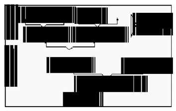

İKİNCİ BÖLÜM
MODERN DİYALEKTİK
A. DİYALEKTİK MATERYALİZMİN KATEGORİLER TEORİSİ
Her çağın kültürü, bilginin özgül alanlarının –bilimin, sanatın, politikanın, felsefenin, ideolojinin vs.– bir sistemi olarak ortaya çıkar. Bu sistem, bilgi dallarının kendi aralarında az çok tutarlı bir birlik, karşılıklı ilişkiler ve bağıntılar, etkileşmeler üzerine kuruludur.
Tarih boyunca teknolojiden politikaya, folklordan sanata, bilimden ideolojiye, birçok alanın özgül ürünü olarak sınıflandırılan düşünceler arasında zorunlu bir ilişki ve bütünleşme eğilimi gözleyebiliriz. Her bir alandan diğerine geçişler vardır: Birinde üretilen düşünce diğerinde yeniden içeriklendirilir. Birinin ima ettiğini diğeri gerçekleyip somutlayabilir. Bazen bir dinsel dogma, bilimsel buluşun gizli anlamı gibi kendisini ortaya koyar, bazen de bir bilimsel buluş, dinsel inancın yorumunu genişletmesi için zorlayıcı etki yapar. Bir felsefi öngörü bir bilimsel buluş halinde parlayabilir ya da bir bilimsel buluş, felsefenin ilerlemesine, sanatın boyutlanmasına yol açar. Siyasette bir teori, ahlak ve estetikte değişmelere, üretimde bir ilerleme toplumsal hukukta sarsıntılara yol açar.
Ancak toplumsal etkinliğin bu değişik alanları arasındaki ilişki ve etkileşme, görünüşteki bu öğe alışverişi düzeyinde kavranıp açıklanamaz. Asıl önemli olan kültürel dünyanın içsel ilişkilerini, genel ve soyut bir içerik olarak ele alabilmektir. Böylece sonuçta, doğa, toplum ve bilinç olaylarını bir bütün olarak işleyen genel bir teori doğar. Özetle böyle bir teori, her şeyden önce değişik alanların ve düzeylerin kendilerine özgü ilişkilerinin, tikel konumlarının aşılması, birleşik ve bütünsel bir bilgi içeriği olarak yeniden üretilmesi demektir.
Kategorilerin başlıca önemi, bu bütünlüğü sağlayan araçlar olmalarında görülür. Kategoriler, evrensel hareketin bütünlüklü kavranışını sağlayan, tikel alanların bilgisini tümel bir bilginin öğeleri halinde üzerlerinde işlem yapılabilir kılan, ya da en azından böyle bir işlev yerine getirmeleri beklenerek inşa edilen düşünme araçlarıdır. Daha kısa bir tanımla, diyalektik kategoriler, olayların, nesnelerin ve düşüncelerin en soyut, genel ve temel özelliklerini ifade eden kavramlardır.
Mantığın, “dünyanın tüm somut muhtevasının, dünya hakkındaki bilginin gelişme yasalarının teorisi” ve “dünya hakkındaki bilginin tarihinin dökümü, toplamı, sonucu” olduğunu söyleyen tanımla, kategorilerin, “evren hakkında bilgi edinişin basamakları”, evrensel bağıntılılık örgüsünün “bilinmesini ve egemenlik altına alınmasını sağlayan düğüm noktaları” olduğunu belirten tanımı birlikte düşünerek şu özeti çıkarabiliriz:
— Diyalektik mantık, bütün bilgi tarihinin yoğunlaştırılmış ve yalınlaştırılmış ve özetidir. Kategoriler bu “kısaltmayı” yapmış olmanın sonuçları ve yapabilmenin araçlarıdır. Bir başka deyişle, kategoriler de mantık gibi, bilginin tarihsel gelişmesinin bir ürünü ve bu gelişmenin basamaklarıdır.
— Diyalektiğin kategorileri, bütün bir ilişkiler ağının “düğüm” noktaları olarak, doğanın, toplumun ve bilincin hareketini bütün halinde içerip ifade eden genel kavramlardır. Öyleyse, gerçekte “ağ”, mantığın bütün sistemi içinde yeniden üretilmiştir. Böylece de, bir yanıyla mantık, kategorilerarası ilişkilerin bilimidir.
Hegel’in kavramlardan örülü evren tasarımında mantık, bu bütünlüğü kavramların birbirleriyle ilişkisinde, birbirlerinden doğuş ve birbirlerinden eriyişlerinde çözmenin bilimiydi. Kategoriler ise, “varlığın tüm belirlenimleri” olarak tanımlanıyordu. Mantık ve kategoriler arasındaki ilişkiyi şimdi şöyle özetleyebiliriz: “Her şeyin gelişme yasalarının bilimi” olan mantık, bu evrensel gelişmeyi ancak, aşamalı ve kesintisiz ilerleyişinin momentlerini ve bağıntılarının yoğunlaşmasını ifade eden kategoriler inşa ederek ve kategorileri nesnesi kabul eden işlem süreçleri izleyerek kavrayıp açıklar.
Kategorilerin, genel olarak bilginin gelişmesinde oynadığı rol, onlar hakkında idealist teorilerin kaynağı olmuştur. Düşüncenin gelişmesinin belli bir evresinde insan, evrenin nesnel varlığı ile kendisinin evren hakkındaki bilgisini biçimlendiren kategoriler-tümel kavramlar arasında bir ilişkisi bulunduğunu görmüş, bu ilişkiden, tümellerin var edici, yaratıcı bir güç olarak nesnelliğe öncel oldukları sonucunu çıkarmıştır. Uzun çağlar boyunca egemen düşünce, varlığın ancak bilindiği ölçüde var olabileceğini söyleyegelmiştir. Bilme ise, varlığa mümkün olduğunca tam yüklemler verebilmekti. Öyleyse, kavramların ve kategorilerin birleşmesi, bu düşünce ürünlerinin varlığın yüklemi olarak bir araya gelmesi, varlığı belli bir varlık haline getiriyorsa, “düşüncenin maddeyi yarattığı” kabul edilmeliydi.
Tersine kurulmuş bir ilişkiyi ifade etmesine rağmen, bu tez yabana atılacak cinsten değildir. Gerçekten nesne hakkındaki bilgimiz, genel ve soyut yapılar kazandıkça “hakikate” yaklaşabilir. Kategoriler, nesneyi bilinç yoluyla var etmenin araçları olarak tanımlandıklarında, bilgiyi teknik ve pratik sınırlarından kurtararak soyut-teorik düzeye yükseltmekte oynadıkları rol mutlaklaştırılmış oluyordu. Bununla birlikte idealizmin bu tezi, bilgi sürecinde insan aklının edilgen olduğunu ileri süren mekanik-metafizik materyalizm karşısında, daha olumludur.
Basitçe: İdealizm, eğer kategoriler olmasaydı, nesnelerin varolamayacağını iler sürerken, diyalektik materyalizm, nesneler üzerindeki insan etkinliğinin kategorilerin üretilmesine yol açtığını söyler. Fakat “akıllı idealizm” ile diyalektik materyalizm arasındaki ortak yan şudur: Bilgi kategorilerle inşa edilir ve nesnenin mantıksal yeniden üretilişinin (idealizm bakımından nesnenin yaratılışının) başlıca araçları gene kategorilerdir.
Diyalektik materyalizmin kategoriler teorisinin başlıca tezleri şunlardır:
— Kategoriler, insanın tarihsel gelişmesinde, bilginin ve toplumsal pratiğin gelişmesinin birer ürünüdürler.
Bundan iki sonuç çıkar: Kategorilerin içeriği, öznedeki ve nesnedeki gelişme ve değişmelere bağlıdır. Bu onların sayıca da sınırlanamayacakları anlamına gelir. Demek ki nesnel gerçekliğin biliniş ve kavranışı ilerledikçe, yeni kategoriler doğar, eskiyenler değişir veya ölür.
— Kategoriler, nesnel gerçekliğin ve bilginin konusu olan her şeyin, en temel ve genel ilişkilerini, özelliklerini yansıtırlar. Nesneye akıl tarafından yakıştırılmış dışsal belirlemeler olmayıp, nesnenin düşüncede yansımasının sonuçlarıdır.
— Metafizikte kategoriler, birbirlerinden mutlak olarak ayrılmış, dondurulmuş ve karşıt kılınmış hareketleri, ilişkileri veya varoluş biçimlerini anlatırlar. Diyalektikte ise, nesnenin hareketli, bağıntılı, geçişli özelliklerini yansıtırlar.
— Kategoriler arasında bağıntılar vardır ve bu bağıntılılık, bir kategoriler sistemi doğurur.
Diyalektik materyalizmin kategoriler teorisinin başlıca ilkelerini iki ana başlık altında inceleyeceğiz.
1. KATEGORİLERİN TARİHSELLİĞİ
Kategorilerin doğuşu ve gelişmesi ile insan bilgisinin ve pratiğinin ilerlemesi birbirine bağlıdır. Bilgi ve pratik etkinliğin belli bir düzeye ulaşmasıyla, dağınık ve tekil alanların bilgisi, teorik bir genellemeye ve bütünlüğe ulaşabilirdi.
V.I. Lenin, bir mantık kategorisinin doğabilmesi için, onun ifade ettiği nesnel ilişkilerin, tarih boyunca milyarlarca kez denenmiş ve gözlenmiş olması ve böylece bilinçte iyice kazınmış bir gerçeklik halini alması gerektiğini söyler. Kategorilerin tarihselliği kavramının anlattığı birinci yan budur. Kategoriler, bir gelişme sürecinin ve birikimin ürünüdürler. Örneğin bir “oluş” kategorisinin doğabilmesi için, önceki bölümlerde gördük, mitolojinin ve dinsel dogmaların akıl ve az çok gelişmiş bilimsel düşünce tarafından eleştiriye uğratılarak aşılması, felsefi düşünce içinde yeniden üretilmesine elverecek birçok deneyin yaşanmış olması gerekiyordu. Bu toplumsal tarih bakımından da bir ilerlemeye denk düşer ve üretimde ve işbölümünde birçok gelişmeyi gerektirir. Soyut, genel veya evrensel bir ilişkiler sisteminin (bir kavramlar sisteminin) kurulabilmesi için, tekil ve somut nesneler üzerinde yalnızca bireysel değil, bundan daha önemli ve belirleyici olmak üzere, toplumsal bir işlemler sürecinin yaşanmış olması koşulu vardır. Demek ki kategorilerin tarihselliği kavramının birinci yanını, onların insanın tarihsel ve toplumsal etkinliğinin ürünü olmaları anlamı oluşturuyor.
Kategorilerin tarihselliği kavramı, gene bu ilişkiler bakımından, aynı zamanda kategorilerin geçici ve göreli araçlar oldukları anlamına gelir. İdealizm açısından kategoriler, yalnızca maddeye değil, zamana da önceldirler. Bu yüzden de, örneğin Hegel’de olduğu gibi, bir hareketlerinden söz edilse bile, bu yalnızca mantıksal ve içsel bir harekettir, bu hareketin zaman boyutu yoktur. Diyalektik materyalizm bakımından, nesnel anlamda ortaya çıkan bu boyutsuzluk kabul edilebilir bir şey değildir. Her şeyden önce, “ayakları üzerine dikme” diye özetlenen işlem, temelinde madde üzerinde insanın toplumsal etkinliğinin bulunduğu bir hareketi öngörmektedir ve böylece ilk elde, kategorilerin hareketinin bağımlı bir karakter taşıdığı gerçeği vurgulanmaktadır. Bu durumda kategoriler, nesnel gerçekliğin canlı, değişken doğasının bilinçteki bir yansıması olarak tanımlanmaktadır ve bu belirlemenin ulaşacağı sonuç, onların geçici, göreli hatta ölümlü olduklarıdır. Engels, Doğanın Diyalektiği genel başlığı altında topladığı notlarında, bir zamanlar bilime ve felsefeye egemen olan pek çok kategorinin eskidiğini, geçersizleştiğini, uygulanamaz hale geldiğini anlatır.5 Burada incelenen kategoriler (parça ve bütün, basit ve bileşik, özdeşlik, kutupluluk vs.), metafizik tarzda kurulmuş fakat bilimsel bilginin gelişme düzeyi bakımından belli bir süre yararlı ve geçerli olmuş kategorilerdir. Ne var ki, genel olarak metafiziğin, özel olarak da mekanik ampirizmin deneysel bilim alanında gittikçe güç kaybetmeleri sonucunda, söz konusu kategorilerin içerikleri işlevsiz kalmıştır. Metafizik sistemlerde geliştirilen tanımlar ve soyutlamalar, nesnel gerçeklik hakkındaki bilimsel bilginin ilerlemesi karşısında, bulunan yeni ilişkileri kapsayamaz, açıklayamaz hale düşmüşlerdir. Bilimlerdeki gelişmenin yol açtığı bu sonuç, kategorilerin felsefede de yeniden ele alınıp işlenmesi gereğini doğurdu. Ancak bu, yalnızca kategorilerin içeriklerinin “düzeltilmesi” ile sınırlı kalamazdı. Eleştiri, bir yeniden kuruluşu zorlayacak biçimde sistemin kendisine yöneldi. Metafizik, diyalektik tarafından parçalandı.
Kategorilerin tarihsel bir görelilik yapısında olduklarına dair diyalektik materyalist teori, buradan hareketle, mantıksal olarak, Hegelci mutlak içten belirlenme kavramının da eleştirisine ulaşır.
Kategorilerin yalnızca ve mutlak olarak kendi iç hareketlerinin sonucunda doğup doğurduklarını söyleyen Hegelci tez, bu hareketin kaynağında “evrensel mutlak aklın” hareketinin bulunduğu düşüncesine dayanıyordu. Bu durumda onların hareketinin ve evriminin akıl dışında bir sebebi bulunamazdı.
Modern diyalektik, kategorilerin doğup evrilmelerinin kaynağının maddi-toplumsal dünyada olduğunu gösterirken, “aklın hareketinin” dışında bir yere işaret ediyordu. Sosyo-tarihsel hareketin gelişmesinin bağımlı bir sonucu olarak kategoriler böylece kendi başlarına birer gerçeklikmiş gibi görülmekten kurtuluyorlardı. Kategorilerin, bir belli çağ için ve o çağın ilişkileriyle belirlenmiş bilgi düzeyine karşılık düşen bir içerikleri olabilirdi; toplumsal kuruluşun hiçbir biçimi mutlak, son ve değişmez olmadığına göre, bunlarla belirlenmiş kategoriler de mutlak olamazlardı. Marx, bu görüşü şöyle özetler: “Kategoriler, ifade ettikleri ilişkilerden daha çok sonsuz olamazlar.”
Görüleceği gibi, ister Engels’in belirttiği gibi bilginin gelişme düzeylerine bağımlı yanlarıyla olsun, isterse Marx’ın işaret ettiği gibi sosyo-tarihsel ilişkilere bağımlı yanlarıyla olsun, kategorilerin hayatları, dıştan, yani bilincin dışından belirlenmişlerdir. Bu anlayış, kategorilerin bağımlı doğasını açığa çıkarır ve idealist sistemlerde kazanmış oldukları “dışsal gerçekliği yaratan, maddeyi bilinç yoluyla var eden” anlamlarının temellerini dağıtır.
Bununla birlikte düşünsel etkinlik içinde kategorilerin üretilmesinin özgül yanı hakkında modern diyalektiğin yargısı olumludur. Zira kategoriler, madde dünyasının basit algılanışının üzerinde, yüksek soyutlamalar olarak kurulmuşlardır ve nesnenin ve bilginin hareketinin en genel ve temel özelliklerinin bir özetini verirler.
2. KATEGORİLERİN MANTIKSALLIĞI
Kategorilerin, nesnel ilişkilerin bilinçteki yansımalarının ürünü olduklarını söylemekle, hareketlerinin bir dışsal varoluşla belirlendiğini ifade etmiş oluyoruz. Fakat şimdi, kategori üretiminde hiç de bundan daha az önemli olmayan bir başka kaynağa işaret etmeliyiz.
Kategorilerin birer yansıma olması, onların doğrudan doğruya maddenin bir ürünü, “maddeden çıkan bir şey” oldukları anlamına gelmez. Kategoriler, maddi ilişkilerin bilinçte, bir genişletilmiş yeniden üretime tabi tutulmalarından doğarlar. Bu önerme, kategorilerin tarihselliklerinin yanı sıra, bir de mantıksallıklarının bulunduğu anlamına gelir.
Var olan her şeyin kategorilerin bir yansıması olduğunu söyleyen Hegelci teori, kategorilerin bilinç dışı varlıklarca belirlenmiş bir hareketlerinin bulunabileceğini kabul edemezdi. Fakat, kategorilerin maddi ilişkilerin bir yansıması olduğunu öne süren modern diyalektik bakımından, kategorilerin bir de düşünce hareketine bağlı olan yanlarının bulunduğunu söylemek, aynı derecede yadırgatıcı ya da kabul edilemez değildir. Elbette kategorilerin hayatı, esas olarak maddi hayat tarafından belirlenir; ama bunun yanında kategoriler, “düşünsel üretimin sonucu olma” gibi bir özelliğe ve bunun sonucu olarak da, düşüncenin özgül dinamikleriyle belirlenen “kendi iç hayatlarına” sahiptirler.
Konuyu, kavram hareketinin soyut yolu üzerinde inceleyeceğiz.
i. Soyut Kavramdan Somut Kavrama Diyalektik Yol:
Önce birkaç tanım üzerinde durmamız gerekiyor:
Soyut kavram, metafizik sistemlerde “algılanamayan şeyleri gösteren kavramlar” olarak tanımlanır. Örneğin “tanrı”, “adalet” gibi. Bu kavramların duyularımıza konu olacak bir içeriği bulunmadığından dolayı soyut sayıldıklarını görüyoruz.
Gene metafizik sistemlerde, “somut kavram” denilince, belli bireysel nesnelerin genel adları anlaşılır: “Masa”, “kedi” gibi.
Diyalektikte soyut kavram-somut kavram terimleri, tamamen farklı bir içerik kazanmıştır. Diyalektikte, soyut kavram denildiğinde, konusunun en genel ve temel özelliklerini örtük olarak içeren ve bir analiz sürecinin başlangıç noktasını teşkil eden kavram kast edilir. Öyle ki, bu kavramın, henüz belirlenimleri kefşedilmemiş, dolaylanımları kurulmamış ve içeriği açılmamıştır. “Bulanık bir tasarımdan ibarettir.” ilişkileri ve diğer hangi kavramlarla bağıntılı olduğu henüz anlaşılmamış, bütünlüğü kurulmamıştır.
Somut kavram denilince de, bir düşünce sürecinin sonunda, başlangıçtaki soyut kavramın analizinden elde edilen bütün diğer kavramları kapsayan, bütün özellikleri ve ilişkileri açılıp tanımlanmış kavramların sentezinden oluşan kavram anlaşılır.
Kıyaslamayı şöyle de yapabiliriz:
Formel metafizik sistemlerde, soyut ve somut kavramlar dışsal belirlenimlerine göre ayrılmışlardır.
Diyalektikte ise, soyut ve somut kavramlar arasındaki fark, her birinin düşünce sürecindeki yeri ile belirlenir. Kavramların hareketlerinin aşamaları olarak tanımlanırlar ve birer evriliş basamağı olarak ayrılırlar. Soyut kavram, işlenmemiş ham tasarımdır; somut kavram ise, bu başlangıç noktasının açılıp içeriklendirilmesinin sonucudur. Bu durumda, “tanrı” ya da “kedi” kavramları, düşünce sürecinin hangi noktasında bulunduklarına göre, somut ya da soyut kavram olurlar. Kavramların düşünce sürecinde bu soyuttan somuta doğru yükseliş hareketi, diyalektik yöntemin temel bir özelliği olarak önem taşımaktadır. Diyalektik yöntem, özetle, soyut kavramdan hareketle somut kavrama, daha tam bir deyişle, “somutun kavramına” ulaşma yöntemidir. Bu ise, bir zihinsel yeniden üretim sürecidir; Marx’ın deyimiyle, “somutu zihinde temellük etme” yöntemidir.
Konuyu incelediği yazısında Marx6, özel olarak Ekonomi Politik’in yöntemini ele alırsa da, burada bütünüyle diyalektiğin zengin bir açıklamasını da buluruz.
Oraya geçmeden önce, diyalektik yöntemin mantıksal yapısını ve kavram ve kategori hareketinin gelişimini, Hegel’deki temelleri bakımından kısaca görelim.
Kavramsal bir evren tarasarımında, başlangıç noktası daima bir tümel olarak düşünülür. Evreni oluşturan diğer bütün kavram ve kategoriler, bu tümelden, tümdengelim yoluyla türeyeceklerdir. Ancak bu tümdengelimin yapısı, metafizik tümdengelimden farklıdır: burada kavramlar ve kategorilerin birbirlerinden türeyişleri, o bildiğimiz içten gelen etkiyle gerçekleşecektir. Bir kavramdan, başka bir kavrama geçilirken, kavramın ifade ettiği tekil konuma başvurmak, nesneye uygulanışına dönmek ya da oradan gelmek gerekmeyecektir. Hegel’de kavram ya da kategori ile dış dünyanın ilişkisi, tek yönlü olarak görünür; kavramlar ve kategoriler, dış dünyanın hareketinden doğmazlar, dış dünyanın hareketinin kaynağıdırlar. Böylece Hegel, kategorinin bir yanını, kavramsal gerçeklik yanını mutlaklaştırmış olur. Buradan doğan sonuç şudur: Kategori üretimi, gerçeğin üretimidir. Bir başka deyişle, zihin, kategoriler üretmekle, kategorilerin karşılık düştüğü nesnel-gerçek ilişkileri de üretir, yaratır. Bu yüzden, kategorilerin süreci, gerçek üretim süreci gibi görünür.
Genel çizgisi bakımından, bu hareket, “soyuttan somuta” doğru ilerler. Bu yolu, Hegel’in, “ide”nin doğalaşmasını anlatan genel teorisi içinde düşünmek daha açıklayıcı olacaktır. Kısaca hatırlayalım: Soyut ide, kendi imkânlarını görmek üzere, kendi içinden gelen bir itkiyle harekete geçer ve doğalaşır; maddi hayat biçimi altında bilincinden ve özgürlüğünden uzaklaşır, ama burada kendi gelişmesinin bütün zenginliğini tanıyabilecek insan düşüncesine ve kültürün dünyasına doğru ilerler. Sonuçta, bu yeni ve yüksek bilinç içinde kendisine, somut bir kavram olarak döner.
Düşüncenin hareketi olarak ele alındığında, bu çizgi, diyalektiğin genel yöntemini verir.
Marx’a bakalım. Söz konusu yazısında, önce Ekonomi Politik’te yöntem anlayışının gelişmesini özetler. Buna göre, eski Ekonomi Politik’te araştırmacı, konusunu somut gerçeklikten yola çıkarak ve somut gerçekliğin belli başlı özelliklerini ayrıştırarak incelerdi. Bazı soyut belirlenimlere-kategorilere ulaştığında araştırma tamamlanmış olurdu. Bu eski yolu Marx, somutun (yani gözlem ve tasarımın hareket noktası olarak somutun) bütünlüğünün çözülüp soyut belirlenimler halinde ifade edilmesi olarak tanımlıyor. Basit bir analitik yol izleyen bu süreçte, başlangıçtaki somutluğun parçalanmış bir soyutlamalar yığını haline getirilmesinin ötesine geçilemezdi.
Bilimsel yöntemin bu olmadığını söyleyen Marx, somutun, “çok sayıda belirlenimin bir noktada bağdaşmasının sonucunda doğmuş bulunan bütünlük” olduğu tanımından yola çıkarak, gerçekte başlangıç noktasının ancak bir soyut kavram olabileceğini belirtiyor. Somut, düşüncede bir hareket noktası olarak değil, bir toplam ve birleştirme sürecinin sonucunda, bir sentez olarak bulunacaktır.
Bu kast edildiği anlamıyla “somutluk”, elbette bir “düşünceler bütünlüğüdür.”
Düşüncenin kavramlar aracılığıyla ürettiği bu somutluk, elbette somutun kendisi değildir. İdealizm açısından bakıldığında, “kafanın bu ürünü”, nesnel ürünün kendisi gibi görünür. Materyalist diyalektik ise, bu üretim sürecinin, somutluğun “kafada temellük edilmesi” olduğunu söyler. Bu, somutu zihinde yeniden üretmekten ibarettir: Yani algılanan nesnel gerçekliğin zihinde işlenerek kavramlar ve kategoriler bütünlüğü haline getirilmesinden ibarettir.
Düşünce ile nesne arasındaki ilişkide, düşüncenin bir yansıma olduğunu, özne ile nesne arasındaki ilişkiden doğduğunu biliyoruz. Ne var ki düşünce, yalnızca insanın maddi dünya ile ilişkisinden doğsaydı ve yalnızca bu ilişki aracılığıyla ilerleseydi, kendini yeniden üretebilme gücüne sahip olmasaydı, gelişme çok ağır olmakla kalmaz, eksik de olurdu. “Somutluğun zihinsel yeniden üretim süreci”, aynı zamanda olgun ve daha zengin kavram ve kategorilerin de üretimi sürecidir.
Başlangıçta nesne ile ilişkisi içinde insan, kavram üretiminin ilk birikimi olarak görebileceğimiz, soyut ve bulanık ve henüz “anlık” düzeyinde genellemeler elde eder. İçeriği ve bağıntıları bakımından oldukça dar olan bu genellemeler, henüz kavram ya da kategori düzeyinde değildir. “Yeniden üretim” benzetmesini sürdürecek olursak, bu genel tasavvur, kategori üretimi sürecini başlatabilecek bir “artı” sayılabilir. İlk artı’nın elde edilmesiyle üretim, artık yalnızca nesne ile ilişki içinde değil, elde edilmiş bu kavramsal artının da katıldığı bir süreç haline gelecektir. Bu andan sonra zihin, bir belirlemeden başka bir belirlenime, bir genellemeden karşıtına geçerek, bunları kendi hareketleri boyunca çoğaltarak ilerleyecektir. Sürecin bu gelişmesi boyunca, “üretim girdisi” artacak, “artı” çoğalacaktır. Genelleme, bir kavram olarak, kavramlar kategoriler olarak genişleyecektir. Bu andan sonra sürecin sentetik yanı için gerekli “sermaye” oluşmuş olacaktır. Analitik süreçte elde edilmiş kavramların hepsi, gerekli ve zorunlu bağlarıyla, başlangıçtaki soyut tasavvuru yani gözlemin başlangıcındaki o bulanık genellemeyi, saydam ve berrak bir kategori haline getirmek üzere sentezleneceklerdir. Gözlemde başlangıçta bulunan, düşüncede en son elde edilmiş olacaktır.
Marx’ın verdiği bir örneği inceleyelim:
Bir ekonomi politik araştırması için işe toplumla başladığımızı varsayalım. Bu, kabaca gözlemin ilk bakışta keşfettiği ve kendisine başlangıç olarak seçtiği, soyut, belirsiz, bulanık bir dış görünüştür. Onun gerçekliği, bu görünüşün ardında bulunan bir dizi ilişkide, onu oluşturan pek çok bağıntıda ve öğede yatmaktadır. Toplum, kendisini önce sınıfların bir bileşimi olarak ortaya koyacaktır. Sınıflar ise, diyor Marx, eğer, emek, sermaye vs. ilişkiler ve öğeler göz önünde tutulmazsa, boş laf olarak kalacaktır. Öyleyse analiz, ilişkileri temsil eden ve birbirine bağlı olan başka kavramların doğması süreci olarak devam edecektir. Ücretli emek ve sermaye, zorunlu olarak, mübadele, işbölümü, fiyatlar gibi yeni belirlenimlerle tamamlanacaktır. Ücretli emek olmaksızın değer anlaşılamaz; para, fiyat, sermaye bir şey ifade etmez.
Böylece, “toplum” soyut kavramı, bu bulanık tasavvur, yeni kavramların açılıp dökülmesiyle gittikçe berraklaşacak, saydamlaşacaktır; “ta en basit karakteristiklerine varıncaya kadar” bu böyle devam edecektir. Nasıl ki, sisler altında bir şehre bir tepeden bakan insan, dağılmakta olan sisin içinde, önce en yüksek binaları, geniş caddeleri, büyük meydanları görür de, burasının bir şehir olduğunu kabaca ve “soyut olarak” anlar, ama bu birbirleriyle küçük ara yollar, sokaklar, geçitler ve köprülerle bağlanmış, küçük binalar, parklar, taşıtlar ve insanlarla tamamlanmış bütünlüğü kavrayamaz, fakat sis yavaş yavaş dağılıp parçalar bütündeki yerleriyle açığa çıktıkça bütünün bir şehir, belirli bir şehir olduğunu kavrayabilir hale gelirse, soyut kavramın bir somut kavram aşamasına gelmesi de, yani düşüncede yeniden üretilmiş haliyle temellük edilmesi de öyle, en basit, en dolaysız belirlenimlerin keşfedilmesi ve bunların ayrı ve bağımsız bırakılmayıp dolaylanması ve tümlenmesiyle mümkün olacaktır.
Bu süreç, analiz ve sentezin birleştirilmesi olarak da tanımlanır.
Mekanikçi anlayışta analiz ve sentez birbirinden ayrı iki süreçtir. Descartes’ı hatırlayalım: “Güçlüklerin her birini daha iyi çözebilmek için mümkün olduğu ve gerektiği kadar çok bölümlere ayırmak...” diye tanımladığı analiz sürecini, sonra ayrı ve ikinci bir sentez süreciyle tamamlama gereğini duyuyordu. Sentez ise, ona göre, “önce en basit ve tanınması en kolay nesnelerden başlayarak, yavaş yavaş adeta dereceli bir şekilde, en bileşik olanlara kadar düşünceyi düzenle yönetmek”ti.
Buna karşılık diyalektikte analiz ve sentez, birbirinden kopuk ve birbirlerini sırayla izleyen aşamalar değildir: “Analiz ve sentez, varlığın gelişme anları, varlığın diyalektiğidir... Onun için analiz, sürekli olarak ve doğrudan doğruya sentezdir ve sentez, sürekli olarak ve doğrudan doğruya analizdir.” (Hegel)
Her kavramda, bir analiz, yani bir ayrıştırma ve içeriğin bölümlendirilmesi anlamında bir soyutlama ve bir sentez, yani birleştirme ve somutlama bir arada bulunur.
Daha yakından bakalım. Her sentezin bir analiz olduğunu ileri süren önermenin anlamı şudur: Sentez, ilişkide bulunan öğelerin ya da kavramların, bir bütünlük oluşturmaya elverişli yanlarının genel düzeyidir. Bu düzeyin elde edilmesi, her bir öğenin ya da kavramın analizini gerektirecektir. Biz, senteze soktuğumuz kavramların hangi yanlarıyla ve hangi özelliklerinden dolayı birbirlerine bağlandıklarını, ancak onların analizinden çıkarabiliriz. Birleştirme, ayrıştırmaksızın gerçekleşemez.
Kavramların analizinden elde edilen özelliklerden bir ya da birkaçı, genel bir birleştirici olarak ele alındığında, yapılan işlem “genelleyici sentez” adını alır. Bir kavramlar topluluğunu meydana getiren kavramların birbirlerine nasıl ve hangi hareket özellikleri dolayısıyla bağlandıklarını görebilmek, genelleştirici bir belirlenimin, ortak bir niteliğin, içsel bir düzenlilik ilişkisinin bulunabilmesi demektir. Analiz, bu durumda sentezin içinde, onun hareketinin bir yanı olarak kendisini gösterir. Sınıflandırma işlemi, genelleyici sentezin bir örneğidir.
Genelleyici ve somutlayıcı sentez olarak adlandırılan bu işlemlerde, görülüyor ki, her analiz, daha ilk adımından başlayarak bir senteze, her sentez bir analize dayanmak zorundadır. Mekanikçi analiz ve sentez anlayışlarının görmediği budur. Orada, her bir işlem, bir diğerinin karşıtı olarak görülmüş, aralarındaki içsel birliktelik düşünülmemiştir.
Bir deney sürecinde, daha başlangıçta, deneyin amacını belirleyen ve problemi ortaya koyan bir varsayım vardır. Bu, araştırma sürecinin “soyut kavramı” olarak görülebilir. Varsayım, gözlem ve deney sürecinde, aşama aşama tamamlanan, çelişmeleri çözülüp dağıtılarak yeniden ve tutarlı bir bütün halinde inşa edilen, böylece “soyut kavramdan, somut kavrama” gidişin başlangıcında bulunan kavramdır. Süreçte, ilerleyen yeni deney ve gözlemler, elde edilmiş kavramların bir sentezini ifade edecek, analitik sürecin kendi üstüne kapandığı, kendini denetlediği momentler olma özelliği taşıyacaklardır. Öyleyse bizzat deneyin kendisi, analitik olduğu kadar sentetik, sentetik olduğu kadar da analitiktir. Eğer analiz süreci, hiçbir sentetik yapı içermeksizin sonuna kadar götürülür ve bütün deneylerin, bütün gözlemlerin tamamlanmasından sonra senteze geçirilir denirse, bu, Bacon’ın çizelgeler yöntemi gibi, hem tamamen şematize edilmiş bir pratik önerisi olacaktır; hem de gerçekte hiçbir zaman böyle “saf analitik” bir süreç başarılamayacaktır. Mekanikçi, mutlak analiz olarak adlandırdığı sürecin gerçekte sentezi içerdiğini, sentetik süreç olarak gördüğü olayın ise analizle ilerlediğini göremeyen adamdır.
Diyalektiğe dönelim. Soyut kavramın analizi, her adımda yeni kavramlar kurarak ilerler. Kavram kurmak, sentez yapmak demektir. Her kavram, bir dizi ilişkinin soyutlanıp sentezlenmesinden doğar. Oysa, soyut kavramın analizinden elde edildikleri anlamında, her biri aynı zamanda bir analiz sürecinin de ürünüdür. Fakat biz, sürecin bu ilk ayrıştırma evresinin esas karakterinin analitik olduğunu söylemekle yanlış yapmış olmayız. Zira, kendisinden yola çıkılan kavramın sürecin bu aşamasındaki durumu, esası bakımından bir analize uğramadır. Analiz süreci, her adımda, kendileri birer sentezi ifade eden yeni kavramların ortaya çıkması ile ilerlediğine göre, bu süreç aynı zamanda sentetiktir diyoruz.
Somut kavramın elde edilmesi için başvurulan sentez ise, her adımda elde edilen yeni kavramların analizine dayanacaktır. Genelleme ve somutlama, anacak analizle sentezin bu iç içeliğine dayanarak mümkün olacaktır. O anda, sürecin aşması kendisini esas olarak bir sentez süreci olarak ortaya koysa da, ayrılamaz biçimde analizi de içerecektir.
Askerlik biliminde, “Hedef Analizi” adıyla anılan önemli bir dal vardır. Klasik askerliğin katı sınıflandırmalar temeline dayanan bütün teorilerinde olduğu gibi, hedef analizinde de, mekanik bakış açısı egemendir. Ancak bu haliyle bile, etkinliğin özel bir alanının biçimselleştirilmesi çabası olarak, kendi içinde bir diyalektiği taşıdığını görebiliriz.
Hedef analizi, komuta grubunun hareket kararı verebilmek için yaptığı inceleme sürecini kapsar. Böyle bir karar, her şeyden önce, hedefin ve hedefe yönelik hareketten beklenen etkinin özelliklerinin net olarak tanımlanmasını gerektirir. Çünkü, hedefin dış durumu, yani coğrafi konumu ve istihkâm özellikleri ile, iç durumu, yani personel, cephane, iaşe durumu ve lojistik koşulları ile hareketten beklenen sonuçlar arasındaki ilişki, kullanılacak araç-gereç ve izlenecek taktik için doğru seçim yapmayı sağlayacaktır. Başka bir deyişle, bu ilk analizler, hedef ve hedefe yönelik hareket arasındaki ilişkiyi açıklığa kavuşturacaktır. Hedef analizi bu aşamada, hareketi düzenleyen tarafın kendi koşullarının incelenmesine yönelir. Eldeki araç ve gerecin “miktar ve kalitesinin”, ne türden taktiklerin uygulanmasına imkân verdiği araştırılır. Böylece eldeki araç ve personel ile beklenen etkiler arasında uyum olup olmadığı, uyum yoksa, eksikliklerin neler olduğu, eksiklikler giderilemeyecek türden ise, araç ve personel kombinezonun başka nasıl düzenlenebileceği vs. araştırılır.
Son olarak karar verecek olan grup, hareket sırasında kaçınılması gereken etkilerin neler olduğunu ve hareket sonrasında doğacak diğer olası sakıncaları (ekonomik, politik, sosyal problemleri) hesaplar.
İşin mantıksal yapısına bakalım:
“Hedef”, çeşitli özellikleri bilinmeksizin, bir “soyut kavram”dır. Onun çeşitli bağıntıları, coğrafi özelliklerinde, korunma imkânlarında, askeri, siyasi, iktisadi, sosyal bağıntılarında bulunmaktadır. Hedef kavramının somutlanması, bu özelliklerin tanınıp bilinmesine bağlıdır. Daha ilk adımda “hedef”, kendisini belli kavramlarla ifade edebilecek bir dizi ilişki içinde ortaya koymuştur. “Hedef” kavramı, diğer yandan, gene ilk adımda, kendisine karşı eylemde bulunacak bir güç bulunduğunu anlatmakta ve karşıtını içermektedir. Öyleyse onun somutlanması, bu karşı gücün imkânlarının da açılıp bir kavramlar sistemi olarak tanımlanmasına bağlıdır. Bu durumda “hedef”, kendisine yöneltilecek olan taktik ve teknik araçların da bir sentezidir. Yalnızca ve tek taraflı olarak “hedef” nesnesi yoktur; karşılıklı olarak birbirlerini belirleyen ve birlikte tek bir olayın içeriğini oluşturan karşıt öğeler vardır. Çünkü hedefin belli başlı özellikleri, hedefe karşı eyleme geçecek gücün özellikleri açısından değişik anlamlar kazanırken, eyleme geçecek gücün imkânları ve özellikleri de, hedefin özellikleriyle belirlenmekte, değişmektedir. Öyleyse soyut hedef kavramının somutlanması, öğelerin bütün içindeki hareketi ve birbirlerine olan etkileri açısından bir analiz ve sentez süreci olacaktır. Hedef analiz edilirken, onun tamamlayıcı karşıtı olan eylemci gücün öğeleri sentezlenecek, bu sentezin ifadesi olarak doğan kavramlar (taktik ve teknik araçlar), her adımda hedefin özellikleri bakımından yeniden ve yeniden analiz edilecektir. Böylece görüyoruz ki, hem olayın bütünü bir analiz-sentez süreçlerinin birliğidir, hem de olayın her bir öğesinin oluşması, karşılıklı olarak belirlenmiş analiz ve sentez süreçlerinin birliği içinde gerçekleşmektedir.
ii. Kategorilerin Mantıksal Süreçte Öncelliği:
Çeşitli bağıntıları açığa çıkarılarak somutlanmış her kavram, bu içerik zenginliğiyle bir kategori düzeyine yükselir. Kategorilerin, “somut kavram” olarak inşa edilmeleri, yukarıda incelediğimiz gibi, önemli ölçüde mantıksal bir süreçtir. Demek ki, kategoriler, tarihselliklerinin yanı sıra, göz ardı edilemez bir başka temel özellik daha taşımaktadırlar: Kategoriler, aynı zamanda bir mantık sürecinin ürünü olarak doğmaktadırlar. Bu durumda kategoriler, yalnızca tarihsel ve mantıksal süreçlerin ürünü olmakla da kalmazlar, daha yüksek eylem ve düşünce süreçlerinin de başlangıcını oluştururlar.
Somutlanma sürecinin sonunda elde edilmiş her kategori, bu son haliyle, kendisini kuran kavramları ve kendisini oluşturan bütün belirlenimleri açıklamaya yetenekli bir anahtar rolü oynar. Bir başka deyişle, kategori, süreçte kendisinden önce yer almış bulunan kavramları belirtik olarak kapsar.
Diğer yandan her kategori, kendisinden sonra, kendisinin hareketinin bir sonucu olarak doğacak olan başka ya da karşıt kavramların “olanağı” durumundadır. Onları örtük olarak içerir.
Bu iki belirleme, kategorilerin kendi geçmişleriyle, geleceklerinin de bir “düğüm noktası” olduklarına işaret eder. Böylece tek bir kategori üzerinde, mantıksal sürecin kesintisizliği ve tutarlılığı cisimlenmiş olur.
Bu, bizi şu sonuca götürür: Bir mantık sürecinin ürünü olan kategoriler, aynı zamanda yeni mantık süreçlerinin de başlangıcı durumundadır.
Birinci olarak, her kategori, kendi oluş sürecinin açıklamasını kendinde taşır. Bu durumda kategoriler, bir sonuçtan hareket ederek geriye doğru, ya da yukarıdan aşağıya, oluş sürecinin mantıksal açıklanışının başlangıç noktasını temsil eder.
İkinci olarak, hareketinin tabiatı gereği, kategoriler, daha zengin ve daha yüksek kategorilere doğru gelişmenin de başlangıç ilkesidirler. ileriye doğru, ya da aşağıdan yukarıya yükseliş için olanaktırlar.
Böylece kategoriler, ister kavram hareketinin öğelerinin ve bağıntılarının geçmişini anlamak için, isterse gelecekteki doğuş ve gelişme eğilimlerini açabilmek için olsun, mantık sürecinin başlangıcında bulunurlar.
B. BİR KATEGORİLER SİSTEMİ İNŞA ETMENİN İLKELERİ
Kategorilerin bağımsız varlıklarının bulunmadığını, gerek yansıttıkları nesnel ilişkiler bakımından, gerekse kendilerinin bir nesne olarak iş gördükleri mantıksal süreçler bakımından birbirine bağımlı olduklarını ileri süren diyalektik tez, iki bağıntılılık düzeyine işaret etmektedir. Birincisi, insanın dönüştürücü pratiğinin kendisine konu aldığı nesnel gerçekliğin bağıntıları, ikincisi ise, bu nesnelliğin zihinsel yeniden üretilmiş halinin bağıntıları.
Bir kategoriler sistemi kurmak demek, nesnel gerçekliğin bağıntılı yapısını, düşüncede bir bağıntılılık düzeyi olarak yeniden üretmek demektir. Bu yeniden üretilmiş sisteme “bilgi” adını veriyoruz. Öyleyse bilgi’nin gerçekleşmesini, dönüştürücü insan pratiğine temel alınan nesnenin bu ilişki içinde açığa çıkan sistemiyle çakışan bir mantıksal –teorik– sistemin kuruluşu olarak tanımlayabiliriz.
Bilgi sürecinin ilerleyişini, pratiğin nesnel koşulları içinde bulunan ve düşünsel etkinliğin düzenlenmesinde kendini gösteren farklı yanlarıyla ele alacağız.
1. MANTIKSALLA TARİHSELİN BİRLİĞİ
Bilginin yukarıdaki tanımından şu önemli sonuç çıkar: Ancak dönüştürücü etkinliğimizin alanı içine, bir yanıyla ya da tümüyle giren nesneleri bilebiliriz; ve dönüştürücü etkinlik, anlık ve bireysel bir pratik değil, tarihsel ve toplumsal bir süreçler ve ilişkiler toplamıdır.
Bu önermede, yukarıda değindiğimiz iki bağıntılılık düzeyi arasında özel bir ilişkinin vurgulandığını görebiliriz. Öncelikle, bilginin nesnesi olan gerçeklik, tarihsel bir anlam kazanmıştır ve metafizik materyalizmin aksine, “insanın pratik etkinliğinin” dışında kalan bir “nesnellik”, bilgi probleminin de dışında bırakılmıştır. Diğer yandan bu önerme, gene metafizik materyalizmin aksine, bilginin nesnel gerçeklikten doğrudan doğruya zihne aktarılan bir etkinlik olmadığını öne sürmektedir.7
Eski materyalizm, maddenin öncel olması formülasyonundan, dış dünyanın “kendinde” varlığının otomatik olarak insan zihnini etkilemesi ve bilginin, maddenin kendisinden doğan bir şey olarak yorumlanması sonucuna ulaşıyordu. Oysa modern-materyalist diyalektik bakımından bilgi, tek yanlı maddenin, müdahaleye uğramamış doğanın tek yönlü etkisinin sonucu değildir. Ve sorunu bu biçimde ele alan metafizik materyalizm karşısında, ilişkinin etkin yönü olarak, bir biçimde insan faaliyetini koymuş bulunan idealizm, daha olumlu bulunur.
Toplumsal etkinliğin dış dünya üzerindeki “devrimci” etkisi başlıca etkin güç olarak ele alınmadıkça, bilgi, “tarihsel olmayan”, soyut ve belirsiz bir maddenin sonucu gibi görünür.
Öyleyse bilgi nesnesi olarak gerçeklik, doğadan üretimle koparılmış, pratik tarafından dönüştürülmüş bir nesnelliktir. Herhangi bir nesnenin üretilmesi, doğal hammaddenin kendi bağıntılarından koparılması, bir kısım bağıntılarının yeniden ve değişik tarzda, yerlerinin veya sıralarının değiştirilerek bağlanması anlamına gelir. Demir cevherinin bir lokomotif haline gelmesini düşünelim: Cevher topraktan çekilip alınmakla, doğal bağıntılarından, etkileşmelerinden koparılmış olur. Aynı anda, yeni ve farklı nitelikte bağıntılarla donatılmaya başlar. Dövülen, dökülen, çelik haline getirilen demir, bir yandan sayısız ve sonsuz doğal bağıntısından ayrılmış ve özel bir bağıntılar bütünü olarak yeniden anlamlandırılmıştır; diğer yandan da sürecin bilgi nesnesi olarak, başka pek çok nesnenin soyut sistemi ile bağlanmıştır. Doğada bulunmayan, ancak toplumsal ve tarihsel pratik tarafından yaratılıp biriktirilmiş olan birçok ürünle, yeni varoluş biçimleriyle karşılaştırılmış ve ilişkili kılınmıştır. Örneğin mekanik ve ısı hakkındaki fizik bilgilerinin üretiliş süreçlerinin sonucu olan denetlenmiş buhar gücü ile, demirin dönüştürülmesi süreçleri birbirine bağlanmış, bütün bunlara, toplumsal kuruluşun belli bir düzeyine denk düşen insan ihtiyaçları biçim ve yön vermiştir. Böylece demir, devrimci insan etkinliğinin sonucunda “insanlaşmış bir doğanın” nesnesi olmuştur.
Bütün bu süreç, hem dönüştürücü insan faaliyetinin sınırlayıcı ve sınıflandırıcı işlemlerini, hem de bu sınırlanmış ve sınıflandırılmış ilişkilerin yeni bir düzeyde, mantıksal düzeyde de yeniden üretilmesini içermektedir.
Sürece biraz daha yakından bakalım:
Herhangi bir insansal müdahale olmaksızın doğa, sonsuz, sınırsız bağıntıların ve karşılıklı etkileşmelerin oluş halindeki sistemidir. Duyumlarımız bu sistemi, olduğu gibi, bütün zenginliği ve karmaşıklığı ile değil, özel ve sınırlanmış bir alan halinde, ilgi ve ihtiyacımızın çerçevesini çizdiği, ayrılmış, bölünmüş özel bir bütünlük içinde karşısında bulur.
Diyalektik tasarıma göre evren, birbirini izleyen, birbirinden doğarak çoğalan ve genişleyen, gittikçe boyutlanan, fakat gene de bir bütünlük gösteren öğelerden ve süreçlerden oluşuyor. Evrenin bütünsel bir süreç içinde ilerlediğini, gene bu süreklilik boyunca kendini belli niteliklerin doğuş ve batışı olarak gösteren kesikliklerin, kopuşların, durakların bulunduğunu düşünüyoruz. Evrenin bütünselliği içinde özgül nitelikleri ve bunların süreçlerini ayırt edebiliyor, fakat bu özgül süreçler arasında da bağıntılar bulunduğunu, kesikliğin, kesintisizlik içinde gerçekleştiğini söylüyoruz. Her özgül sürecin, bir belli sistem olarak, belli bir kesikliği, sistemlerarası bağıntıların ise kesiksizliği oluşturduğunu ileri sürüyoruz.
Kesiklik durumu olarak soyutladığımız yapılar, bize eylemde bulunduğumuz alanda, evrensel bütünlükten ve diğer sistemlerden süreç ve nitelik bakımından görece ayrı olarak ele alıp inceleyebileceğimiz bir nesnellik bulma imkânı veriyor. Evreni, tek bir kesiksiz sistem olarak duyumsayabilme olanağı bulamadığımız sürece, kendisini “özgül evrenler” olarak ayırabildiğimiz kesiklikler üzerinde, yeni kesiklikler kurarak çalışmaya zorunluyuz. Üzerinde çalıştığımız dünya karşısındaki bu zorunlu parçalayıcı ve dondurucu eylemimizin iki yanından söz edilebilir:
— Hareketi tasarlamak için, onu daima sürekliliğinden ayırmak, “ölü gibi dondurmak” zorundayız. Tasarlamak, düşünmek, kavram kurmak, hareketi kesintiye uğratmak ve “kaba saba” kılmak demektir.
— Hareketi yalnızca kavramlar içinde ifade etmek değil, duyumlarımızla algılamak da, aynı biçimde onu “durdurmaktır.”8
Önce ikinci özellik üzerinde duracağız. Ne demektir, duyumlarımızın hareketi dondurması? Önümüzden geçip giden bir treni, her biri bir noktada duran vagonların art arda bir toplamı olarak mı görüyoruz? Ses, kulaklarımıza parçalanmış dalgaların sonradan toplanıp tek tek birleştirilmesi olarak mı geliyor? Söylenenlerin bunlarla ilgisi yok.
Feuerbach üzerine I. Tez’de Marx, gerçekliğin öznel tarzda anlaşılmasının, metafizik materyalizmle diyalektik materyalizmi ayıran bir kıstas olarak ele alıyordu. V.I. Lenin’in yukarıda özetlediğimiz sözlerini bu açıdan ele alırsak, duyumlarımızın yol açtığı kopuşun, maddi hayatın üretimi ve yeniden üretimi süreçlerinin bir sonucu olduğunun söylendiğini anlarız.
Üretim, daima toplumsal ilişkilerle belirlenmiş bir ihtiyaçlar zemini üzerinde gerçekleşir. İhtiyaçların karşılanması ise, gene toplumsal kuruluş aşamasının düzeyi ile bağıntılı bazı imkânların, araç ve gereçlerin doğmuş olmasına bağlıdır. Böylece insan ve doğa arasındaki ilişki, her noktada “toplumsallaşmış” bir ilişki olarak doğup gelişmektedir. Duyduğumuz, algıladığımız dış dünya, toplumsal faaliyet içinde değiştirdiğimiz, ya da değiştirme ihtiyacı ile ele aldığımız bir dış dünyadır.
Marx, “tezler” in altıncısında, “insansal öz”ü, “toplumsal ilişkilerin toplamı” olarak tanımlıyor. Lenin, “bir bardak su” yu, bir gerçeklik olarak kavrayabilmek için, insan pratiğinin bütününün, nesnenin tanımlanmasına girmesi gerektiğini, ve onun bağımsız gerçekliğinin sosyo-tarihsel ilişkiler içinde anlam kazandığını söylerken aynı düşünceyi, üretilmiş nesne ile ilgili olarak dile getiriyor. İnsana ve maddeye bu sosyal ve tarihsel ilişkiler içinden bakış, gerçekliğin içerdiği sayısız bağıntıyı, maddi üretimin gerektirdiği bir sınırlama ve sınıflandırma üzerinde öznelleştirmeyi ifade ediyor. Tekrarlarsak, toplumsal pratik, kendisine konu olarak aldığı nesneyi, doğadaki bütün bağıntılarıyla değil, toplumsal ihtiyacın ve maddi üretimin gerek ve imkânlarının belirlediği bir alan içinde, belli bir süreç ya da bağıntılar dizisini, belli bir niteliği öne çıkaran işlemler içinde değerlendiriyor.
“Her şeyin birbirine bağlı olduğu”nu bildiren önermeyi hatırlayalım: Bu açıdan bakıldığında, herhangi bir nesneyi “tam olarak” bilebilmek ve bu bilgi gereği onu “tam olarak” değiştirebilmek için, bütün evrenin bilinmesi ve değiştirilmesi gerekmez miydi? Oysa dönüştürücü pratik, yalnızca toplumsal durum tarafından seçilmiş, ve gerçek ilişkilerin tümü gibi bize sunulmuş bazı bağıntılar üzerinde gerçekleşiyor. Böylece doğal olanı, önce tarihsel olarak doğadan koparılmış haliyle, bize geçmiş kuşakların bıraktığı bir biçimde önümüzde hazır buluyoruz; duyumlarımızın konusu olan madde, böylece tarihsel olarak belirlenmiş, kesintiye uğratılmış, bağıntıları değiştirilmiş olarak karşımızda duruyor.
“Evrensel bağıntılılığın” işlenen madde üzerinde tasfiye edilmesinin bu birinci düzeyi, yani tarihsel düzey, mantıksal yeniden üretimin de temelini oluşturuyor. Mantıksal inşa, nesnenin bağıntılı yapısının bir kez daha ayıklanıp tasfiyeye uğratıldığı ikinci düzeydir. Lenin’den yukarıda özetlediğimiz paragrafın birinci kısmı bunu anlatıyor. Pratik-tarihsel süreç içinde değiştirilmiş, koparılmış bağıntılar, düşünce düzeyinde, yeniden, fakat bu kez en temel ve en genel oldukları saptanmış bağıntılara dayanarak, tarihsel zenginliğinden de ayrılıyorlar. Soyutlamanın bu düzeyinde, maddi üretim içinde sınırlanmış ve sınıflandırılmış olan nesnel ilişkiler, kavramlar ve kategoriler biçiminde yeniden sınırlandırılıyor ve sınıflandırılıyor.
Bir yanda maddi hayatın üretimi ve yeniden üretimi sürecinde görülen hareket ve değişmenin nesnel ve tarihsel gerçekliği, diğer yanda bu sürecin teorik yeniden kuruluşu iç içe ilerliyor. Bilgi nesnesi haline gelmiş madde, böylece doğasından iki kez koparılmış, aynı zamanda iki kez yeniden yaratılmış bir nesne olarak, bu iki sürecin birliğini ifade ediyor.
Diyalektiğin özü, düşüncenin yol açtığı son kopuşu, kavram ve kategorilerinin hareketi karşıtların birliği içinde kavrayabilmek ve böylece “ölü gibi donmuş” olmaktan kurtulmak çabasında kendini gösteriyor.
i. Tarihselin Mantıksalı İçermesi:
“Tarihselin mantıksalı içermesi” kavramını, iki bakımdan ele alacağız:
1) Belli bir nesnel sürecin, belli bir sona doğru ilerleme eğilimi taşıması; sonucun süreçte içerilmesi,
2) Nesnel süreç ve sonuçların, düşüncede yeniden üretilmenin temellerini ve imkânlarını içermesi.
Tabloda 1. düzey, nesnel süreçleri, nesnenin ya da olayın kökenini, hareketin ve gelişmesini tarihsellik olarak tanımlıyor.
2. düzey ise, nesnel süreçleri ve sonuçlarını, bir bütün olarak tarihsellik, bunun zihinde bir somut olarak üretilmesini ise mantıksallık olarak tanımlıyor. “Tarihselle mantıksalın birliği” kategorisi, iki farklı düzeyi, birbirine tamamlayan, içten bağıntılı süreçler olarak ele alıyor.
Önce birinci düzeyi ele alacağız.
Olup bitmiş olaylar karşısında, “böyle olacağı belliydi”, “perşembenin gelişi çarşambadan bellidir”, ya da tersine, “hiç beklemiyordum” vs. denilir. Bir şeyin “öyle olacağı” ya da “böyle olmasının beklenmiyor olması” hangi ilişkilerin sonucudur? Bir şeyi neden bekler ya da beklemeyiz?
Günlük hayat içinde olaylar, tarihsel deney birikiminin oluşturduğu alışkanlıkların, “önyargı sağlamlığı kazandırdığı” düşüncelerle değerlendirilir. Çoğu kez mantıksal çıkarsama yapıldığının farkına varılmaksızın, sezgiler, beklentiler biçiminde yargılar ileri sürülür. Bu yapılırken, en kalıcı ve en eski önyargılardan birine dayanılır: “Sonuç, öncenin içinde bir biçimde vardır!”
“Sonuç”, “önce içinde” kendisini nasıl gösteriyor? Ayrıntıları daha sonra ele almak üzere, şimdilik şu belirleme bize yetecektir: Sonucun nitelikleri, bir süreç içinde adım adım gelişerek, öğeler arasındaki bağıntılılığın düzenli ve zorunlu bir içerik kazanmasıyla oluşur.
Bu önermede ifade edilen önce-sonra ilişkisinin, mekanik nedensellik kavramından ve süreci belirleyen öncel mantıksallık kavramından farklı olduğunu görebiliriz. Buna göre, sonucun oluşmasına yol açan hiçbir ön gerektirme, hiçbir dışsal zorunluluk, sürecin başından ve süreç dışı olarak konulmuş değildir. Burada her şey sürece, sürecin hareketli ve değişken yapısına bağlanmıştır. “Mantıksalın tarihselde örtük olarak içerilmesi” biçiminde ifade ettiğimiz ilişki budur.
Tarihsel süreç, “ilk neden”in metafizik sistemlerde oynadığı rolü, diyalektikte üstlenmiş bir kavram değildir. “İlk neden”, ya da yalnızca “neden”, o sistemlerde, sonucunu bütün içeriği ile birlikte, başından beri kendisinde taşır. Oysa tarihsel süreç kavramı, kendi sonuçlarının, kendi içinde adım adım ve gittikçe belirginleşerek oluştuğu bir hareketi ifade eder. Burada sonuç, başlangıçta, daha ilk öğede, aynı nitelik ve içerikle bulunmaz.

Her olayın, tarih içindeki değişik durumlarının birbirine bağlı olduğunu, geçmiş ve gelecek momentlerinin süreklilik içinde birbirine bağlandığını, hiçlikten gelip hiçliğe gitmediğini düşünüyoruz. Şunu sorabiliriz: Eğer hareket halindeki olgu, art arda gelişen aşamalardan geçiyor ve her aşama, bir öncekinden doğmuş ve bir sonrakini doğuracak gibi görünüyorsa, üstelik bu bağıntılılık, bir düzene sahip ve zorunlu ise, burada tıpkı mantığın iç düzenine benzer bir yapı söz konusu değil midir? Buna bakarak doğanın “mantıklı” olduğunu söylememizde yanlış olan nedir?
Antik felsefeden başlayarak, “doğanın bir mantık düzeni içinde hareket ettiği” inancı, düşünce tarihinde pek çok sistem ve biçim altında dile getirilmiştir. Buna göre, bir belli eğilim göstererek, belli bir yönde, belli bir sonuca doğru geliştiği tasarlanan hareket, kendisini kuran bir ilkeler bütünlüğüne dayanmak zorundaydı. Bu görünüş altında, temel ve değişmez bir yasalar sisteminin bulunduğunu düşünmek ve bunu evrenin kendine özgü mantığı olarak ifade etmek, meraklı doğa felsefecileri için kaçınılmazdı. Sonraki gelişmelerle birlikte düşündüğümüzde, bu sonuç, şöyle genelleştirilebilir: Maddi evrenin hareketi, geçmişinin anlaşılmasını ve geleceğinin bilinmesini sağlayacak bir mantıksal düzenlilik içinde gerçekleşmektedir.
Bu düşüncenin sergilendiği iki uç örneği hatırlayalım:
Mekanik materyalizmin nedensellik teorisi, hareketin katı bir belirlenmişlik içinde gerçekleştiğini, böylece birbirine zincirleme bağlanmış olayların ve olguların, ilk halkadan başlayarak son halkaya kadar, zorunlulukla doğup battığını ileri sürüyordu. Bu zincirleniş içinde, her olay “bir neden olarak” kendisinden sonrakine yol açıyor ve bu “sonuç” da kendisinden sonrakinin nedeni oluyordu. Böylece başlangıçtaki nedenin niteliği, son halkada da kendisini koruyor, sonuçta bulunan her şey, daha başlangıçta esasen içerilmiş oluyordu. İlk halkadan son halkaya kadar, ilk nedenin bütün nitelikleri ve içeriği, süreç boyunca belirleyici olarak kalabiliyor, her olay ve olgunun durum ve eğilimi, değiştirilemez, genel ve temel yasalar halinde daha ilk adımda konulmuş bulunuyordu.
Hegel idealizmine göre ise, dış dünyanın hareketi, evrensel aklın diyalektik hareketinin bir gerçekleşme tarzından başka bir şey değildi. Diyalektik, daha başından itibaren “açılmamış bir bütün olarak” vardı. Bir “Tez” olarak, “Mantık Formu” içinde bulunuyordu. Gelişmesinin bir aşamasında kendisini “öteki varlık” halinde gerçekleştirdi ve buna düşünce tarihinde “Doğa Felsefesi” karşılık düştü. Sonunda ise, “ide” insan bilincinde ve kültürün dünyasında kendisine dönmeye, tamamlanmış ve somutlanmış varlık olarak kendi bilincini edinmeye başladı. Düşüncede buna “Tin Felsefesi” karşılık düştü. Hegel’e göre, Tin Felsefesi, “tinin, kendi tarihsel özüretiminin bilincine varması”ydı. Diyalektik aklın bu sürecinde, her aşamada kendini gerçekleme çabasında bir diyalektiğin bulunduğu ileri sürülmüş oluyor. Uzun bir hareket süreci sonunda da olsa, kendi bilincine kavuşan şey, aslında gene başlangıçtaki bilinçtir. Burada mekanik nedensellikten farklı olarak, sürecin başlangıcında bulunan “mantıksal öncül”, basit bir “ilk neden” değildir. Hareketinin her aşamasında kendini gerçekleyen ve böylece gelişmesinin yönlendirici gücü olarak bizzat gelişmenin içinde yer alan, kendi sonucu, kendi ereği olarak içinde taşıyan bir sürekliliktir.
Genelde Hegelci tarih teorisi, sürece öncel bir bütünlük bulunduğunu öne sürmekle, metafizik determinizmle bir noktada kesişiyor. İster “ilk neden” olarak adlandırılsın, isterse “ereksel öncül” olarak tasarlansın, evrenin hareketine yol açan ve onu belli bir sonuca doğru zorunlulukla götüren öncel yasalılık düşüncesi, her iki teoride de ortaktır.
Modern diyalektik, bu temel düşüncenin reddedilmesi üzerinde yükseliyor. Nesnel ilişkilerin ve hareketin, insan müdahalesi olmaksızın “mantıksal bir öncüle dayandığı”, maddenin kendisinin varolmasından önce varolan bir yasaya göre gerçekleştiği tezi, en materyalist kalıplar içinde de sunulmuş olsa, yukarıdaki özetlerin gösterdiği gibi, idealist-metafizik bir evren tasarımına denk düşmektedir.
Bir süreç, hareket ve bağıntılılık mantığı olan diyalektik, bu sonucu kabul etmemiştir, çünkü, bu tezlerin temelinde şu iki önerme bulunmaktadır:
— Nesnenin hareket ve değişkenliği, hareket ve değişkenlikten etkilenmeyen ön yasalara göre gerçekleşmektedir,
— Öyleyse, düzenlilik, bağıntılılık ve zorunluluk, değişmeyen bir içeriğe sahiptir.
Felsefede “TÖZ” kavramıyla ilgili olan bu düşünceler, “Tanrının belirleyici iradesi” ya da “önceden konulmuş ve değişmez doğa yasaları” ifadeleriyle, tarihin yorumunda da kendilerini gösterirler.
“Töz”, “varolmak için başka hiçbir varlığa ihtiyaç duymayan”, “varolan her şeyin temel ilkesi”, “değişen her şeyin değişmeyen dayanağı” vs. gibi birçok biçimde tanımlanmıştır. Bütün metafizik sistemlerde töz, evrenin bilinebilmesinin de temeli sayılmıştır. Bütün hareketlilik içinde hareket etmeden, değişiklik içinde değişmeden kalabilen, tek biçimli ve özdeş yapılı olarak tasarlanan bu “varlık”, ister mekanik materyalistlerde olduğu gibi, maddi bir şey olarak önerilmiş olsun, isterse idealistlerde olduğu gibi, bütün varlığı açıklayan veya yönlendiren bir ilke olarak öne sürülmüş bulunsun, diyalektik materyalizmin bütün sistemiyle çelişmektedir.
Her şeyden önce, doğal hareketin “mantıksal bir yapısı” bulunduğunu söylemenin, yalnızca pratik etkinliğe konu olan bir doğa parçası üzerine konuşmak anlamına geldiğini hatırlayalım. Buradan çıkarılacak iki sonuç vardır:
1. Mantıksallık, doğada değil, onun üzerinde etkinlikte bulunan insan tarafından üretilmiş zihinsel somutluğundadır.
2. Mantıksallığın nesnenin bir özelliği halini alması ancak onun uzun bir tarihsel süreci kapsayan yeniden üretilmesinin sonucu olabilir.
Doğanın, bilimler ya da felsefe tarafından sınıflandırıldığı tarzda, fakat kendiliğinden yasalara sahip olduğunu öne sürmenin, bugüne kadar görülen iki ana biçimi var: Birincisi, maddiliğin öncesinde ya da ötesinde, bir yasa koyucunun varlığına bağlı olarak tasarlanan yasalılık, ki bunun en temiz idealizm olduğunu biliyoruz; ikincisi, varlıkların içinde, onlara özdeş olarak bulunan, fakat bireysel olmayan ve varlığın değişmelerinden etkilenmeyen bir ilke halinde tasarlanan yasalılık, ki bu da metafizik materyalizm ve dinsel biçimiyle panteizm tarafından savunuluyor.
Diyalektik materyalizm açısından, mantıksallığın, ya da daha özel bir ifade ile “doğa yasalarının” nerede ve ne biçimde bulunduğu sorusu, nasıl oluştukları ve ifade edildikleri sorusundan bağımsız olarak ele alınamaz.
Daha önce de değindiğimiz gibi, doğanın bilinmesinin dereceleri ya da basamakları olarak yasalar, insan-doğa ilişkisi içinde, pratik etkinlik sürecinde açığa çıkarlar. Bu, yasaların, ilk göründükleri gibi, yalnızca öznel formülasyonlar olmayıp, gerçek ilişkiler içinde, nesnel bağıntılar halinde bulunduklarını da gösterir. Doğal harekette, genel bir etkileşme ve bağıntılılık bulunduğu, dolaysızca görülebilecek bir açıklıktadır. Ama bunun tümel olarak nasıl ifade edileceği, geçici ve göreli bir bilgi düzeyinin sorunudur. Çünkü tümellik, daima, sosyo-tarihsel pratiğin bölümlediği alanların, pratikle açığa çıkarılan ve pratik tarafından anlamlı kılınan ilişkilerin tümelliğidir. Mantıksal kavram ve kategoriler, eninde sonunda, teknik ve pratik bilgi alanlarının düzeyine bağlı, onların aşılmış soyutluğu olarak doğmuş tümelliklerdir.
Pratik etkinlik, bir dış gerçeklik üzerinde, sınırsız ve sınıflandırılmamış somut, canlı karmaşık doğa üzerinde gerçekleşir. Bu, maddi hayatın üretilmesinin ilk verisidir. Üretim sürecinin nesneyi düzenleyen ve doğal olmaktan çıkartarak insansal hale getiren etkisi, onun aynı zamanda mantıksal bir ürün olarak işlenmesinin de temelini kurar. Doğada bir düzenlilik, art ardalık ve süreklilik bulunduğu ancak onun üzerinde çalışan insan tarafından, çalışmanın gerekleriyle ilişki içinde ve bununla sınırlanmış olarak açığa çıkarılabilir. Bunun için doğa, en az iki kez soyutlanmalı, en az iki kez kendinden koparılmalıdır. Bu açıdan bakılınca, “doğa yasalarının” ya da nesnel süreçlerde bulunduğu düşünülen “mantıksallığın”, “tarihsel birer ürün” oldukları sonucuna ulaşırız.
Bir nesnel ilişkinin, mantıksal bir ilişki olarak ifade kazanabilmesi için, toplumsal tarih içinde milyarlarca kez tekrarlanması gerektiği söylenmişti. Buna göre, ilk kez karşılaşılan bir olay, tek bir kez doğmuş ve ölmüş bir ilişki, hiçbir “mantığa” sahip değildir. Sırf düzensizliği, beklenmedikliği, tekrarlanamaz ve genelleştirilemez oluşu yüzünden rastlantısaldır, demek ki “mantıksızdır”. Şu halde ancak zaman içinde art arda gelişen, bir bağıntılılık kazanan, belli bir eğilim taşıyor olmakla tanımlanabilen ve genellik gösterebilecek bir toplam oluşturan ilişkiler “yasalılık” kavramı altında toplanabilecektir. Bir başka deyişle, nesnel hareketin bir belli kural altında anlatılabilmesi, mantıksal olarak ifade edilebilmesi, ancak genelleştirilmeye uygun bir nicel ve nitel durumun olgunlaşmasına yetecek kadar uzun bir tarihsel sürecin yaşanmış olmasına bağlıdır.
Bilim, ilk kez karşılaştığı bir olgu karşısında, ilkin kendi birikimlerini gözden geçirerek, bu yeni olgunun daha önce formüle edilmiş yasalardan hangisinin kapsamı içinde anlaşılabileceğini sorar; eğer cevap, bilinen yasalar içinde bulunabiliyorsa, olgu sınıfını bulmuş demektir, sorun yoktur. Fakat bazı yeni olgular –toplumsal pratiğin doğadan ayıkladığı yeni bağıntılar ya da yeni nesnelerdir bunlar– her zaman geleneksel bilgi sistemleri içinde açıklanamaz. Böyle bir durumla karşılaşıldığında, genellikle eski teoriler gözden geçirilir ve teoride bir eksiklik bulunup bulunmadığı araştırılır. Gene de bir açıklama geliştirilemezse, yeni bir teorik sistem kurma ihtiyacı doğar. Bilim tarihi, eskimiş ve ölmüş “doğa yasaları”nın mezarlığı gibidir.
“Doğanın bir tablosunu çıkaran insan etkinliği”, farklı düzeylerdeki pek çok değişikliğin etkisiyle, bu tabloyu boyuna bozup yeniden yapmak zorunda kalıyor. Her bozuluş ve yeniden kuruluş, evrensel sistemin bir parçası üzerindeki “mantıksallığın” yani onu bilgi düzeyinde ele geçirişimizin, kavramlar ve kategorilerle örülmüş sisteminin bozuluş ve yeniden kuruluşu anlamına gelmekle kalmıyor, her yeni ve daha yüksek mantıksal kuruluştan sonra, buna uygun bir pratiği de başlatmak ve doğayı öylece yeniden üretmek anlamına da geliyor. Bu anlamda da, doğayı yalnızca değiştirmekle kalmıyor, onu yeniden yaratıyoruz.
Özetle: Evrenin bağıntılı bir bütünlük olduğunu bildiren önermenin kaynağında, insanın dış dünya üzerinde bağıntılı ve sistemli eylemde bulunması yatıyor. Bu, insan olmaksızın doğanın bağıntılı olmadığı anlamına gelmiyor, ancak bunun mantıksal formlar altında ifade edilebilmesi ve üzerinde düşünsel işlemler yapılabilmesi için önce değiştirilmesi gerekiyor.
İkinci tezi ele alırken, bu düşüncenin açtığı yoldan ilerleyeceğiz. İkinci tez, mantıksallığın, nesnenin bir özelliği halini alabilmesi için, nesnel hareketin mantıksal bir biçim alabilmesi için, uzun bir tarihsel sürecin yaşanmış olması gerektiğini ileri sürüyordu.
Dış dünya üzerindeki pratiğinin sürecinde, nesnel ilişkileri “mantıklı bir düzen” olarak kavramlaştıran insan, maddi dünyayı yeniden üretirken de, onu “mantıklı bir biçimde” yeniden düzenliyor. Toplumsal hayatın her alanında, “düzenli, bağıntılı ve zorunlu” yapılar oluşturulur ki, bu şunu söyleyebilmemizin temelidir: Pratiği sürecinde maddi dünyanın tarihselliğinden bir mantıksallık üretmiş bulunan insan, bir yandan da mantıksal kılınmış bir yeni dünya tarihi üretebilmektedir.
Engels’in bir saptaması konuyu ilginç bir yanından ele almamıza olanak sağlıyor: “.... bizim aramızda (Avrupalılar arasında), sekiz yaşındaki her çocuk için matematiksel aksiyomlar, kendiliğinden açık göründüğünden, bunları deneyle tanıtlamanın gereği yoktur; bu, salt ‘biriktirilmiş kalıtımın’ sonucudur. Bir vahşiye, ya da Avustralya’lı zenciye bunları tek bir kanıtla öğretmek ise çok zordur.”9 Burada kullanılan “kalıtım” kavramını, soyun özelliklerinin kuşaktan kuşağa geçmesini ifade eden biyolojik içeriği ile düşünmüyoruz. Burada bu kavramın, bütün bir “kültürlenmiş dünya”yı anlattığını, toplumsal olarak “biriktirilmiş kalıtım”ı ifade ettiğini kabul edersek, çocuk ve matematiksel aksiyomlar arasındaki ilişkiyi, “tarihselle mantıksal arasındaki ilişki” kavramı açısından anlamlandırabiliriz.
Kültür ve uygarlık her belirtisinde, bir açıdan belli bir mantıksallık görüntüsü verir. Mimaride, ticarette, askerlikte, dinde, dilde vs. yani ayrı ayrı sayılması gereksiz her toplumsal kurum ve ilişkide, “mantıksal kuruluş”un izlerini görürüz. Her toplumsal üründe, “milyarlarca kez” denenmiş böylece yargı biçimi kazanmış ilişkiler kendini duyurur. Orantı, bağıntı, düzenlilik, zorunluluk vs. “insanileştirilmiş doğa”nın her biriminde derece derece fakat mutlaka vardır. Pek çok tarihsel, coğrafi, toplumsal vb. etken dolayısıyla, bu biçimler şu ülkeden bu ülkeye, şu halktan bu halka değişir. Her özgül durumda, kendi içinde tutarlı bir yapılanma gösteren bu ilişkiler, bize, Yunan, Çin, Arap vb. kültürlerinden söz etme imkânı verir. Bir belli kültür, her zaman, kendi tarihsel dinamiklerinin ifade edildiği belli bir ilişkiler bütünüdür.
Gelenek, ahlak, sanat, din, dünyayı kendilerine özgü kavramlar yoluyla yeniden üretmenin araçları olarak tanımlandıklarında, bunların hepsinin bir iç çizgi ile birleştirilmiş olduğunu görmemize imkân verecek olan, fakat çoğunlukla doğrudan ve somut olarak kendisini göremediğimiz, daha genel, bir de “mantık” bulunduğunu düşünmeliyiz. Tarihin her aşamasında, toplumsal kuruluşun her özgül biçiminde, özel ulusal ve tarihsel koşullar içinde doğan her çocuğun, doğaya ve topluma hangi kavram ve imgelerle bakacağını belirleyen, nasıl düşüneceğine karar veren, koşullayan bir “biriktirilmiş kalıtım”, bütün bu öğelerin bütünlüğünde içerilmiş olarak bulunmaktadır.
En basitinden, düzgün caddeler, binalar, anıtlar, parklar, yani düzgün ve düzenlenmiş yapılar bütünlüğü olan bir şehirde, bunların hepsinin üretilmesini mümkün kılan toplumsal ve kültürel ilişkiler çerçevesinde doğan bir çocuk için, şehiri şehir yapan bütün tarihsel birikimin, konuşulan dilin kendisine hazır olarak sunduğu “mantıklı bir dünya” vardır. Elbette böyle bir çocuk, doğaya insan müdahalesinin çok sınırlı olduğu Avusturalya yerli bölgesinde doğmuş bulunan bir çocuktan farklı olacaktır. Sözünü ettiğimiz fark, doğrudan eğitim tarafından ortaya çıkarılmış bir fark değildir. Bir yapı bütünlüğünün birleşik etkisinden ve bunun kendisini bir zihinsel şekillenme olarak ortaya koymasından söz ediyoruz. “Miras”, “biriktirilmiş kalıtım” kavramlarının içeriğini bunlar oluşturuyor. Bu öğeler zenginliği, bir Avrupa şehrinde doğan çocuğun hayal gücünün ve düşüncesinin örgütlenmesinde, Avustralya yerli çocuğuna göre kıyas kabul etmez bir üstünlük sağlayacaktır. Örneğin iki nokta arasındaki en kısa yolun bir doğru çizgi olduğunu bildiren önerme, böyle bir aksiyom, doğru çizgiler halinde düzenlenmiş cadde ve sokaklardan gelip geçen bir şehirli çocuk için başkaca hiçbir kanıtı gerektirmeyecek kadar açık ve “doğru”dur. Ama ormanda, doğal engellerle kıvrılıp bükülmüş bir ortamda yaşayan vahşi için, “en kısa yol” tanımı, daha farklı olacaktır: Kulübesi ile orman arasındaki en kısa yol, onun için, nehrin kıvrımlarını izlemek olabilir. Bu durumda bizim aksiyonlarımız ona “kabul edilmesi pek güç bir mantığın ürünü” olarak görünecektir.
Platon’un ünlü Diyalog’larından birinde, Sokrates, cahil bir köleye, güç bir geometri teoreminin tanıtlanmasını yaptırır. Böylece şunu göstermek ister: “Öğrenmek, hatırlamaktır!” Çünkü Sokrates’e göre, bilgi bu dünyadaki hayatımızdan önce edindiğimiz kavramsal bir yapıdır. “Öğrenme” dediğimiz şey, bizde esasen saklı bulunan ve önceki hayatımızda bize verilmiş olan “gerçek bilgi”yi hatırlamaktan ibarettir. Sokrates, bu temel tezden hareket ederek, köleyi kendisinde saklı bilgiyi “doğurmaya” zorlar. Onu yönlendirir, görünüşte yeni bir şey öğretmez, “zaten bildiği şeyleri” ona hatırlatmaya çalışır.
Bizim bu diyalogdan çıkaracağımız sonuç, Sokrates’in ispatlamak istediği önermenin içeriği ile bir bakıma aynıdır: Köle, gerçekten yeni bir şey öğrenmemekte, gerçekten “bildiği bir şeyleri hatırlamaktadır.” Sokrates’in cahil kölesi de, Engels’in sekiz yaşındaki Avrupalısı gibi, “mantıklı olarak düzenlenmiş bir dünyanın”, uygar ilişkilerin ürünüdür. Uygar dünyada yaşayan her insanın her ilişkisi, belli bir toplumsal kuruluş ile koşullanmış genel bir tutarlılık içinde, dizili ve birbirinden çıkarsanabilen, bağıntılı kılınmış öğeler bütünlüğü içinde gerçekleşecektir. Farkına varmaksızın, kendisine doğrudan doğruya öğretilmemiş, fakat toplumsal hayat tarafından dayatılmış bir düşünme tarzının mekanizmaları içinde hareket edecektir. Ne tarafa baksa geometri ile karşılaşacak, kiminle konuşsa dilin mantığını kullanacak, ahlakın, dinin, sanatın ya da ticaretin, alet kullanımının içinde kendisine sunulmuş bulunan “biriktirilmiş kalıtımın” ana çatısını, iç çizgisini, tutarlılığını yansıtan kültürü, Hegel’in diliyle söyleyecek olursak “diyalektiğin kendi bilincine vardığı” bir nesnel gerçekliği bulacaktır.
Öyleyse, kölenin ruhlar dünyasında iken öğrenip sonra bu dünyaya gelince unuttuğunu sandığımız şey, bu dünyanın gerçek ilişkileri içinde üretilip kölenin ruhuna sindirilmiş olan şeydir: Fakat tıpkı Sokrates’in düşündüğü gibi, her yerde olan, ama hiçbir yerde bulunmayan, soyut bir “öte dünya varlığı” olarak. Onu ancak, somut formundan soyarak, tikel biçimler altında kalmış genelliğini, bir dizi zihinsel işlemle, analiz ve sentezle açığa çıkarır, “belirtik”, açık seçik ve düzeltilmiş hale getiririz. Sokrates’in birey üzerinde yaptığı “doğurtma”da aslında bundan başka bir şey değildir, kendi ölçülerinde.
Yaşanılan dünya, tarih içinde gittikçe daha “mantıklı”, gittikçe daha az rastlantının rol oynadığı, denetlenebilir bir insan dünyası halini alıyor. Ama toplumun sınıflara bölünmüş çatışmalı yapısı sürdükçe, bu “mantık”, hiçbir zaman gerçekten bir “insan mantığı” biçimini alamayacak, daima bir “egemen sınıf mantığı” halinde kalacaktır. Marx, komünizm öncesi için, “insanlığın tarih öncesi” deyimini kullanır; komünizmi ise, zorunluluğun dünyasından özgürlüğün dünyasına geçiş olarak tanımlar. Burada toplumsal kuruluşun bu en yüksek aşamasının, “tarihsellik” ve “mantıksallık” ilişkisi içinde bir tanımını bulabiliriz. Orada, mantıksallığın, hayatın bir özelliği olarak kendini gösterdiğini, böylece de “nesnel olarak hakiki” hale gelerek aşıldığını düşünebiliriz.
Buraya kadar söylenenleri şöylece özetleyebiliriz:
Eski ile yeni, tükenmekte olanla doğmakta olan arasındaki bağıntı, kararlı ve düzenli bir dizilişi, tutarlılığı, ancak pek çok defa tekrarlanan ilişkilerin genelleşmesinde göstermeye başlar. Böylece, “az çok tamamlanmış tarihsellikte” bir “mantıksallık” imkânı ortaya çıkar.
Burada bizi, idealist ve metafizik sisttemlerden ayıran temel nokta şudur: Mantıksal olan, tarihsel sürecin adım adım gelişmesinde gerçekleşir; her ne biçimde olursa olsun, sürecin başında bulunamaz.
Bir belli sürecin, bir belli sonucu doğurmuş olması, bu sonucun sürecin daha başında belirlendiği kanısını doğurur. Metafiziği yanıltan budur.
Diyalektik ise, süreç ve sonuç arasındaki ilişkiyi, art arda süreklilik kavramı içinde, hem sürekliliğin içeriğini, hem de eksiklikler halinde kendini gösteren sonuçları, bir karşılıklı etkileşme ilişkisi olarak görür. Böylece “önceden belirlenmişlik”, ya da “ereğe göre belirlenmişlik” kavramlarının karşısına, “süreç içinde oluş” kavramı dikilerek, metafizik aşılır.
“Tarihselin bir süreç boyunca mantıksalı oluşturması ve içermesi” kavramının, bir dizi başka kavramı tartışmaya getirdiği görülüyor. Önümüzdeki bölümlerde, bu kavramların belli başlılarını ele alacağız.